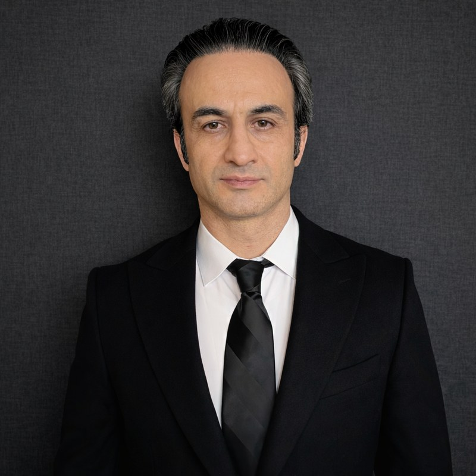

Assistant Professor of Physics · Kennesaw State University
Erfan Saydanzad
My research focuses on ultrafast and strong-field physics in Atoms, molecules, and nanoparticles. I develop theoretical models and numerical simulations on attosecond to femtosecond timescales, including plasmon excitation in metal nanoparticles and the autoionization and predissociation dynamics of molecular Rydberg states.

Research
Strong-field nanoparticle photoemission, attosecond plasmonic-field imaging, and ultrafast molecular Rydberg dynamics.
Read more →Courses
Open lecture notes, problem sets, and project materials.
Read more →Join the group
Faculty-mentored undergraduate research opportunities for KSU students.
Read more →Teaching
All courses →Mathematical Methods in the Physical Sciences
The mathematics a physics major needs, in the order the physics needs it: series, complex numbers, linear algebra, vector calculus, Fourier analysis and differential equations.
Direct Method: Guided Research in Quantum Mechanics and Spectroscopy
One-to-one research mentoring for undergraduates in quantum mechanics and spectroscopy. The notes are under active development and may contain errors or incomplete sections.
Principles of Physics I
The calculus-based introductory sequence: mechanics, oscillations, waves and thermodynamics, for physics and engineering majors. Lecture notes are not posted yet.
Introductory Physics Laboratory I
The laboratory course accompanying Principles of Physics I: measurement, uncertainty, and comparing an experiment against the model that predicted it. Lecture notes are not posted yet.
News
- Group website live, with the Mathematical Physics lecture notes published in full.
- The group started at Kennesaw State University.
- Generation of fast photoelectrons in strong-field emission from metal nanoparticles published in Nanophotonics.
What we work on
My research program has two tightly connected directions. The first is strong-field photoelectron emission from metal nanoparticles, where intense infrared fields (typically above \(10^{13}\) W/cm²) drive nonlinear ionization and rescattering dynamics that differ from the atomic case. The second is ultrafast dynamics in molecules and nanoparticles, where attosecond and femtosecond methods resolve coupled electronic and nuclear motion in real time.
To study these problems, I develop theoretical models and numerical simulations that are compared directly with experiment. In nanoparticles, this includes semiclassical trajectory models with tunneling release, transport, rescattering, plasmonic near-field effects, and many-electron corrections such as residual charging and photoelectron-photoelectron correlations. In molecules, I model autoionization and predissociation dynamics of Rydberg states using time-dependent approaches anchored in Fano resonance physics.
Current projects focus on three key observables: high-energy photoelectron spectra from strong-field nanoparticle ionization, delay-dependent streaking spectra used to reconstruct induced plasmonic fields, and pump-probe photoelectron yields that track ultrafast decay pathways in molecular Rydberg manifolds. Together, these projects clarify how laser fields control electron and nuclear dynamics in complex systems.
My group emphasizes reproducible computation and student ownership of methods. Code and figures are developed together, and students are trained to build and test their own simulation workflows rather than only run existing scripts.
Teaching
Course material on this site is open to read and use, whether or not you are enrolled.
Undergraduate students interested in research are welcome to reach out. Projects can be aligned with individual preparation and goals, including options to develop toward presentations such as the KSU Symposium of Student Scholars.